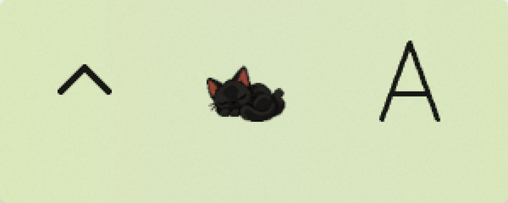
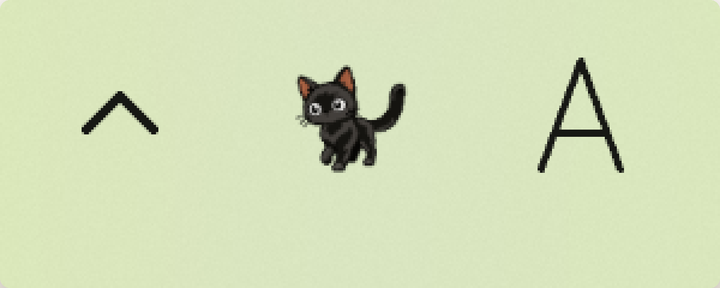
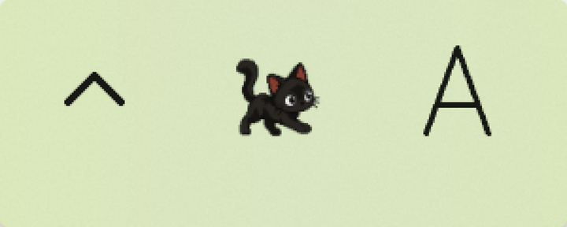

ねこメーター
タスクバーの通知領域に猫が住みます。猫を見れば PC の調子が分かります。
Windows 10 バージョン 1809 以降 / Windows 11（64 ビット）
猫の様子で分かること



できること
- アイコンにポインタを乗せると、CPU・メモリ・GPU・電池・C: ドライブの空き・ネットの速さを表示します
- 猫が走っている間は、いちばん重いアプリの名前も出します（メニューで止められます）
- 右クリックの「今日の推移」で、今日の負荷・電池・ネットの線と、猫が走った・寝た時間をグラフで見られます
- 電池が少ないとき・猫が走り続けたときに、Windows の通知で知らせます（それぞれ止められます）
- 猫が何で走るか（CPU と GPU の高い方・CPU・GPU・メモリ）を選べます
- 「猫の反応を見る」で、主な反応を 1 分ほどで順に見られます
- 表示は 13 言語に対応しています
邪魔をしません
- 開きっぱなしのウィンドウはありません
- 通信しません。アカウント・広告・課金はありません
- 常駐中の CPU 使用率 2% 未満・メモリ 150MB 未満を目安に作っています